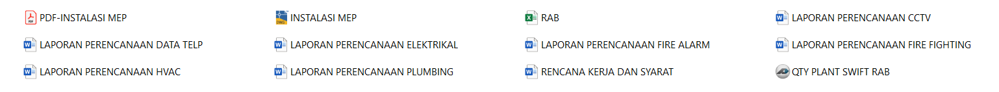

“Desain Cepat, Cerdas dan Efisiensi”
MEP CENTER merupakan sebuah jasa feelance teknik yang berfokus pada layanan drafting dan perencanaan sistem MEP (Mechanical, Electrical, Plumbing). Dengan pengalaman luas di berbagai jenis proyek mulai dari gedung komersial, Pabrik, institusi pendidikan, rumah sakit, hingga infrastruktur publik kami menghadirkan solusi desain yang presisi, efisien, dan siap diterapkan di lapangan.
Didukung oleh tim Engineering berpengalaman, kami menguasai berbagai platform desain teknis seperti AutoCAD 2D/3D, Revit (BIM), ETAP untuk sistem kelistrikan, Simulasi HVAC berbasis VRF & Heatload Calculation, Estimasi menggunakan PlantSwift & Microsoft Office. Kami juga menerapkan metode perhitungan dan teknologi terbaru untuk menghasilkan estimasi yang praktis, terintegrasi, serta mendukung proses pelaksanaan proyek secara lebih efektif dan terarah.
DED adalah tahapan perencanaan teknik secara rinci dan lengkap yang digunakan sebagai acuan utama untuk pelaksanaan konstruksi di lapangan. Dalam konteks MEP, DED mencakup gambar kerja lengkap (shop drawing, layout, single line, isometrik, detail instalasi), Laporan perhitungan teknis, RAB & RKS.

Penyusunan gambar teknis dua dimensi untuk sistem MEP berdasarkan denah arsitektural. Meliputi jalur pipa plumbing, ducting HVAC, kabel tray, titik lampu, saklar, panel, sprinkler, dan perangkat lainnya. Gambar disusun sesuai standar teknis dan mudah dibaca dan diterapkan di lapangan.
Pembuatan model tiga dimensi MEP menggunakan software seperti Revit / Autocad 3D. Cocok untuk kebutuhan yang mendetail , juga untuk deteksi tabrakan (clash detection), dan visualisasi sistem. juga untuk memudahkan perencanaan instalasi dan prefabrikasi di lapangan ( Fitup ).
Merupakan Laporan perhitungan diantaranya Kapasitas pompa, Perhitungan instalasi air hujan , Perhitungan perhitungan Air Change, simulasi ETAP ( Beban Listrik, Drop Voltage, Capasitor Bank ) , simulasi Headload & HVAC VRF , dll.
Penyusunan estimasi biaya pekerjaan MEP berdasarkan gambar teknis dan spesifikasi material. Dapat digunakan untuk tender, perencanaan anggaran internal, maupun evaluasi efisiensi proyek.
Dokumen teknis pendamping gambar kerja yang menjelaskan standar pelaksanaan, material yang digunakan, metode pemasangan, serta ketentuan umum dan teknis sesuai regulasi dan standar proyek.
Layanan koreksi, pembaruan, atau penyesuaian terhadap gambar MEP existing atau as-built. Cocok untuk proyek renovasi, audit sistem eksisting, atau menyesuaikan gambar terhadap kondisi lapangan terbaru.


{kind=link}
{kind=link}
{kind=link}